ImageMagick Examples --
 Miscellaneous
Miscellaneous
- Index
 ImageMagick Examples Preface and Index
ImageMagick Examples Preface and Index
 Interpolation
(Inter-pixel Color Lookups)
Interpolation
(Inter-pixel Color Lookups)
- Simple Interpolation Methods
- Bilinear, Mesh, Catrom, Spline
- Interpolate on a Background
- Interpolate of a Rotated Line
- Interpolate of a Rotate Edge
Virtual Pixels
(Missed-Image Color Lookups)
-
Edge,
Tile,
Mirror,
Transparent,
Black,
Gray,
White,
Background,
HoriziontalTile, HoriziontalTileEdge, VerticalTile, VerticalTileEdge,
CheckerTile, Random, Dither - Virtual Pixel and Infinities
- Virtual Pixel Colors
- Virtual Pixel Examples
- Implosion Effects on Virtual Pixels
Random Spots of Solid Color
Annotate Argument Usage
Splice: Creating a New Image Operator
Border, Frame, and the use of BorderColor
List Operator Testing
Pixel Interpolation or Inter-pixel Color Lookup
The "-interpolate"
setting is used when looking up a color in a source image, but that 'lookup
point' falls between the pixels of the source image.
This is done in various image operations, such as the "-fx" (DIY
Special Effects Operator), and "-distort" (Generalized Image
Distortion Operator), as well as other related operators like the Circular Distortions.
Basically 'interpolation' tells IM how to interpret a Direct Color Lookup from an image, when the
point does not exactly match an actual pixel in an image, but falls in the
space between pixels.
For example if you look up the color at pixel location 3,4 you
should get the exact pixel color. But what should IM return if you looked up
the color of an image at the point 3.23,4.75? Should you get
the pixel color at 3,4 or 3,5? or perhaps some a
mix of the surrounding pixels colors, and if so how should the colors be
merged together?
Pixel Interpolation defines what ImageMagick should do when looking up
a single color at a floating point position (in pixel coordinates).
Interpolation is in some ways similar to pixel resampling, such as provided by
Resampling Filters. The essentual difference
is that resampling has a 'scale', 'area' or variable 'window' from which
a color that represents all the pixels in the area is returned. Interpolation
does not have a 'scale' involved, only a single 'point' of lookup, and only
a fixed sized 'area' around that point from which to determine the color to
use at that point.
Of course most area resampling algorithms tend to devolve to an interpolative
method when the area of resampling reaches a minimim working 'window', and
this naturally happens when images are being enlarged, or upsampled. This is
why Interpolated Filters and Gaussian Blurring Filters tend to work better for
enlarging images.
Interpolation is basically a lower form of sampling, and is basically used
when you want a simple and fast answer to the 'what color' question.
Simple Interpolation Methods
These are straight forward, simple methods, that try to do as lettl as posible to return a color to use from a 'point interpolation' The simplest is 'Nearest' and
'Integer', will just pick a single pixel color from the
source image, as it without any mixing or other blending effects. This
preserves original color values of the image but at a cost of aliasing
effects, and typically a less than smooth look to images.
As of IM v6.7.6-2 you can use 'Nearest' as a short hand for the
'Nearest-Neighbour' interpolation setting.
|
Integer' will
simply round down the lookup point to select the pixel, which results in
a general translation half a pixel right and downward. It is typically only
used in simplified 'scaling' of the source image. On the other hand
'Nearest' will select the closest pixel to the floating point
lookup coordinate, and as such produces a more correct result.
'Blend' Will blend together (average) the nearest 1, 2 or
4 pixels, depending on their distance from the sampling point. The result is
that the original pixel color is still present, but halved in size, while
a checkerboard of blended colors fills space between. (see example below)
'Average', will never actually produce an exact color
match, but will always mix the 4 surrounding pixels to produce a local
average. This can be useful for color lookup situations.
'Average4' can also be used an an alias for this interpolation
method.
'Average9' is similar but will average the nearest
9 pixels around the sampling point, producing a blurry result.
'Average16' will average the nearest 16 pixels around the
sampling point, producing an extrememly blurry result.
Here is a summery of the various simple interpolation methods, when enlarging
a small group of colored pixels, or a single white pixel. The original image
looks like the "Nearest" result, but much smaller.
|
![[IM Output]](ip_color_integer.jpg)
| ![[IM Output]](ip_color_nearest.jpg)
| 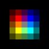 | 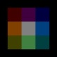 | ![[IM Output]](ip_color_average9.jpg)
| ![[IM Output]](ip_color_average16.jpg)
|
| Integer | Nearest | Blend | Average | Average9 | Average16 |
|---|
Before IM v6.7.7-6 'Average' was actually equivalent to
which is now 'Average16'. The other two averging interpolators
as well as 'Blend', and 'Background' was added at
this time.
|
Background' which simply returns the current background
color for any 'sampling' of the source image. In many ways this is rather
usless, as typically you will just end up with a blank solid colored image.
Its primary use is as a check of more complex resampling functions, such as
a Resampling Failure, where the EWA
resampling filter (typically used from the General Distortion Operator) will fall back to an interpolated lookup when
resampling fails to find any pixels in its 'support' or resampling area.
By setting interpolation to 'Background', and setting
a background color to something that stands out (like 'red') you
can then look for pixels in the resulting image to see where resampling
'failed' or 'missed all source image pixels' for some reason or another.
Typically due to too small a support setting, or from playing with expert
filter options.
FUTURE: Posible future interpolation option of "random" selection
over the interpolated area. Could be useful for fancy interpolated
effects!
Bilinear
'Bilinear' (or linear interpolation) is the default
interpolation method, and probably one of the simplest ways of getting
a real interpolated result, from combining colors of the pixels around the
lookup or sampling point.
Here is a diagram explaining how a bilinear interpolation works.
![[diagram]](../img_diagrams/bilinear_interpolation.jpg)
|
![[IM Output]](interpolate_bilinear.jpg)
|
| 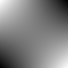 |
|
![[IM Output]](interpolate_45linear.jpg)
|
Mesh
The "-interpolate"
setting of 'Mesh' is a variation of the 'Bilinear' interpolation. Where as
'Bilinear' will produce a 3 dimensional curved surface,
'Mesh' was designed to split the inter-pixel area into two flat
triangular surfaces.
The division of the area into two triangles is based on the diagonal with the
two 'closest' corner colors.
For details of the 'Mesh' algorithm, see the paper Image Interpolation
by Pixel-Level Data-Dependent Triangulation.
|
|
![[IM Output]](interpolate_tri-mesh.jpg)
|
Mesh' algorithm produced almost exactly the
same set of color interpolations as 'Bilinear'.
However if we reverse the yellow and cyan colors..
|
![[IM Output]](interpolate_tri-mesh2.jpg)
|
Mesh' algorithm decided that the
'blue' and 'cyan' colors were the two closest
corners, and created a linear gradient diagonally between these two corners.
The rest of the colors then form a simple flat triangular gradient from this
line to the other two corners.
This may seem like an unusual interpolation, but the method ensures that sharp
borders, remain quite sharp, when color images are only slightly resized,
rotated or sheared. In fact a Adaptive
Resize operation ("-adaptive-resize") uses this fact for small image resizes to
reduce excessive blurring of the result.
For example if we have a single 'white' corner, 'mesh' assumes
that an edge has been found and adjusts the interpolated colors to highlight
this edge.
| 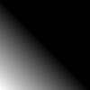 |
| 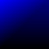 |
Catrom (Catmull-Rom)
The "-interpolate"
setting of 'Catrom' (generally imprecisely known as
'BiCubic' interpolation), is more complex, in the determination
of the colors of a point lookup. Basically it does not just look at the
colors in the corners of the inter-pixel area, but goes further to look at the
colors beyond those nearest-neighbour pixels. A total of 16 pixels in a 4x4 area
around the sampling point.
Basically it fits a curve to the whole area involved, so as to determine the
best overall color to use.
Here is a diagram which probably explains the process better...
![[diagram]](../img_diagrams/bicubic_interpolation.jpg)
| 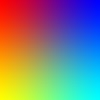 |
Bilinear' interpolation, however the result has
a smoother blending curve rather than straight lines to produce the
interpolated color.
What this image does not show however is the effect of the other pixels
surrounding our four near neighbours. For that we need to look at a slightly
larger area. For this specific (very small) example the surrounding pixels
are controled by the Virtual Pixel setting.
magick \( xc:red xc:blue +append \) \
\( xc:yellow xc:cyan +append \) -append \
-size 100x100 xc: +swap -interpolate Catrom -virtual-pixel edge \
-fx 'v.p{3*i/(w-1)-1, 3*j/(h-1)-1}' interpolate_catrom_edge.jpg
magick \( xc:red xc:blue +append \) \
\( xc:yellow xc:cyan +append \) -append \
-size 100x100 xc: +swap -interpolate Catrom -virtual-pixel White \
-fx 'v.p{3*i/(w-1)-1, 3*j/(h-1)-1}' interpolate_catrom_white.jpg
magick \( xc:red xc:blue +append \) \
\( xc:yellow xc:cyan +append \) -append \
-size 100x100 xc: +swap -interpolate Catrom -virtual-pixel Black \
-fx 'v.p{3*i/(w-1)-1, 3*j/(h-1)-1}' interpolate_catrom_black.jpg
|
![[IM Output]](interpolate_catrom_edge.jpg) 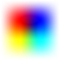
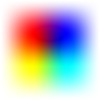
![[IM Output]](interpolate_catrom_black.jpg)
| In a real image the effects of the Virtual Pixels usually only effects results near the very edges of the image. As this image is only 2 pixels wide, the above example is strongly effected. This is not the case in larger more typical images. |
This ringing effect on very very strong color edges can become clipped
resulting in a line of horrible pixels. This problem can be prevented
by doing resizes and interpolation in a different colorspace than
'RGB', such as 'Lab' or 'Luv'
colorspaces.
For more information and examples of this problem see Resizing in LAB colorspace.
|
Note that 'BiCubic' (interpolated Cubic Filter), refers to a very large family of filters, and as such is
very inexact in its meaning. It is however still available, but its use is
depreciated, in favor of more exact names.
After IM v6.7.7-7 'BiCubic' is simply an alias to
'Catrom', which is typically regarded as a good 'cubic
interpolator' (b=0, c=1/2). You should use the name 'Catrom'
rather than 'BiCubic' so as to be clear what you are using for
interpolation.
Before IM v6.7.7-7 'BiCubic' actually used an extreme 'Cardinal
Cubic' filter (b=0, c=1) which has an overly strong negative ringing effect.
This have been completely replaced by 'Catrom', and is no
longer available as an interpolative function.
Before IM v6.3.5-3 'BiCubic' was implemented as a very blurry
'Spline' cubic interpolator. That filter was renamed with this
version of ImageMagick. (see next)
|
Spline
The 'Spline' interpolation method, like 'Catrom' above, also uses the nearest 16 pixels.
However this is a very blurry, Gaussian-like, interpolation.
| 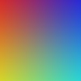 |
Spline' interpolation are muted, as the interpolated surface
does not actually go through the original color of those pixels. Essentially
it is overly 'blurred', and is more correctly known as a 'B-Spline' surface.
The surface is still a type of Cubic Filter
(b=1, c=0) as it generated using a technique of a piece-wise cubic curves.
However this curve only approaches the original pixel colors, especially in
areas of strong color changes.
That is an interpolated lookup of an exact integer pixel position, will not
return that actual pixels color, but a blurring of the color with the
surrounding pixels. This is often thought of as bad, but can be used as
a general smoothing function.
Like 'Catrom' it is also effected by the
surrounding pixels.
magick \( xc:red xc:blue +append \) \
\( xc:yellow xc:cyan +append \) -append \
-size 100x100 xc: +swap -interpolate Spline -virtual-pixel edge \
-fx 'v.p{3*i/(w-1)-1, 3*j/(h-1)-1}' interpolate_spline_edge.jpg
magick \( xc:red xc:blue +append \) \
\( xc:yellow xc:cyan +append \) -append \
-size 100x100 xc: +swap -interpolate Spline -virtual-pixel White \
-fx 'v.p{3*i/(w-1)-1, 3*j/(h-1)-1}' interpolate_spline_white.jpg
magick \( xc:red xc:blue +append \) \
\( xc:yellow xc:cyan +append \) -append \
-size 100x100 xc: +swap -interpolate Spline -virtual-pixel Black \
-fx 'v.p{3*i/(w-1)-1, 3*j/(h-1)-1}' interpolate_spline_black.jpg
|
![[IM Output]](interpolate_spline_edge.jpg) 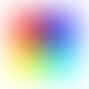
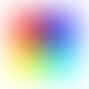
![[IM Output]](interpolate_spline_black.jpg)
| In a real image the effects of the Virtual Pixels is only at the edges of the image. With real pixels surrounding the inter-pixel area from which the lookup is being made. |
Catrom' interpolation.
Interpolation Background
As the effects of interpolation are often over larger areas, here is an enlargement of the four main interpolation methods with white or black surrounding pixels. |
![[IM Output]](ip_area_bilinear_white.jpg)
| 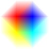 | ![[IM Output]](ip_area_catrom_white.jpg)
| 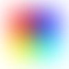 |
![[IM Output]](ip_area_bilinear_black.jpg)
| ![[IM Output]](ip_area_mesh_black.jpg)
| ![[IM Output]](ip_area_catrom_black.jpg)
| ![[IM Output]](ip_area_spline_black.jpg)
|
| Bilinear | Mesh | Catrom | Spline |
|---|
bilinear' interpolated colors. It looks
like it is just overlaid onto whatever background color is present.
You can however see how 'mesh' generates
stronger sharper edges, but can decide to flip the diagonal depending on the
surrounding color, when it is involved at the image edges. Look at the join
between red and blue, between the white and black backgrounds to see this
'flip'.
The interpolated curve for 'catrom' and
'spline' is effected by the surrounding
pixels. Particularly in the test cases involving absolute colors.
And finally 'spline' interpolation is
really just gussian-like blurring of the image (using a sigma of 0.65).
Enough blurring to eliminate any 'ringing' or aliasing effect, though
typically it is too blurry for most uses. See Gaussian Filters.
Interpolation of a Rotated Line
Here I demonstrate the various interpolation methods by creating an image of a vertical line, and using an affine distortion to rotate the line by 17 degrees, then enlarging the view so you can see the anti-aliasing pixels generated. |
![[IM Output]](ip_line_none.gif)
Un-Rotated |
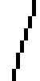
Integer |
![[IM Output]](ip_line_nearestneighbor.gif)
Nearest |
![[IM Output]](ip_line_bilinear.gif)
Bilinear |
![[IM Output]](ip_line_mesh.gif)
Mesh |
![[IM Output]](ip_line_catrom.gif)
Catrom |
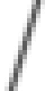
Spline |
|---|
Interger' and
'NearestNeighbor' produces a highly aliased result, but only use
the original colors found in the image. The main difference between the two
is that 'Interger' tends to push the resulting image down and
left by half a pixel.
The 'Bilinear', 'Mesh' and 'Catrom'
generally produce very good and simular results (more on that later), with the
latter producing a very sharp rotated line. Any of these
is generally regarded as a good solution.
The 'Spline' interpolation methods, produces a distinct blurring
of thin lines, so as to remove aliasing effects. However
'Spline' tends to over blur the results, and really more suited
to smoothing gradients, rather than rotated lines.
The special setting "-filter point" is in
the above example is used to ensure that Distort Operator only uses single 'point' interpolation in determining
the final pixel color. Without it an Area Resampling be used instead of Interpolated Lookup, though that also produces very good results.
|
Note that I did not use the "-rotate" operator for these examples, as that operator uses a
Pixel Shearing method to Rotate Images.
As a result pixel interpolation is not used.
See Rotating a Thin Line for
an example of using the -rotate" operator in this way, and the resulting pixel level
effects.
Update: As of IMv6.7.3-4 the rotate operator is now internally using Distort Operator, so the above many no
longer be true.
|
Interpolation of a Rotated Edge
The results have a slight difference when the edge of an area is being distorted, compared to that of a single line of pixels. |
|
Un-Rotated |
![[IM Output]](ip_edge_integer.gif)
Integer |
![[IM Output]](ip_edge_nearestneighbor.gif)
Nearest |
![[IM Output]](ip_edge_bilinear.gif)
Bilinear |
![[IM Output]](ip_edge_mesh.gif)
Mesh |
![[IM Output]](ip_edge_catrom.gif)
Catrom |
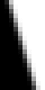
Spline |
|---|
Bilinear' and
'Mesh' produce reasonably sharp edges for general rotates, while
'Catrom' will produce a sharper edge in the distorted image.
'Spline' however will produce fuzzier edges.
The difference between 'Bilinear' and 'Mesh' is
extremely minor in the above cases. The two methods only really generate
visible differences in cases of extreme enlargement during the distortion
operation. Otherwise you will only see slight barely noticeable changes in
pixel intensity.
Virtual Pixels Missed Image Color Lookup
Many operators often need to look-up colors which fall outside the boundaries of the image proper. This includes the operators for Blurring Images, General Image Distortion, Morphological and Convolution Operators, the General Distortion Operator, and even the very old Implosion Operator. So what color should be returned if you ask for a pixel at-22,-3? Such a pixel does not actually exist, but the color
value returned can have far reaching effects on the overall effect on your
image processing, especially the resulting colors of pixels close to the
actual edge of the image.
The "-virtual-pixel" setting defines what IM should return when
accessing a pixel outside the normal bounds of the image.
-fx" to 'lookup' and
display all the pixels in and surrounding the small image so we can see what
the default "-virtual-pixel" setting returned.
|
![[IM Output]](virtual_default.gif)
|
Edge' "-virtual-pixel" setting return the color of the the closest real
pixel to the 'virtual' location requested. That is theneaered 'edge' color.
This time I'll use a faster Image
Distortion with viewport to show the surrounding virtual pixels, instead
of the much slower FX Operator. The distort
method "SRT 0" does not actually distort the image result, it just looks at
what pixels the image operator actual sees, especially the 'virtual' ones
surrounding the source image.
| 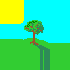 |
Edge' virtual pixel setting is the default setting, so the
above should be the same as the previous example.
This setting generally has the most minimal impact (in terms of edge effects)
when processing images. Which is also why it was chosen as the default
setting. This is especially important when using Blur, or other Morphological and
Convolution operators that use a 'neighbourhood' or pixels for processing.
It is important to note how the color of the corner pixel, will end up
completely filling the diagonally adjacent areas surrounding the actual image.
This can result in the single corner pixel having a large effect on various
image transformations. This 'corner' effect is especially noticeable when
blurring images.
'Tile' VP setting is very useful for generating and
ensuring the image processing edge effects are wrapped around the boundaries
of the image.
|
![[IM Output]](virtual_tile.gif)
|
Mirror' is very similar to 'tile' and may be better for some effects that the default
'edge'.
|
![[IM Output]](virtual_mirror.gif)
|
| Up until IM v6.5.0-1 only the images directly attached to the original image was mirrored. Other virtual copies, further away from the original remained un-mirrored (normal tile pattern). This was fixed so the whole virtual canvas space is now correctly mirror tiled, not just the neighbouring virtual copies. It only becomes important when using mirror tile with General Distortion Operator to mirror tile a very large area, such as when Viewing Distant Horizons |
Transparent' just returns the transparent color for
pixels outside the real image bounds.
|
![[IM Output]](virtual_trans.gif)
|
none' or
'fully-transparent black' is the default transparent color.
For example here I mistakenly turn off transparency...
|
![[IM Output]](virtual_trans2.gif)
|
Transparent' setting is particularly useful for image
distortions, where the distorted image will later be 'layered' to build up
larger images. For example, 3d Affine
Cubes, and 3d Perspective Boxes.
The 'white', 'gray', and
'black', settings are similar to the previous
'Transparent' setting above. They just return that specific
color for any pixel that falls out of bounds.
|
![[IM Output]](virtual_white.gif)
|
|
|
![[IM Output]](virtual_black.gif)
|
-background"
setting, and use a 'Background' "-virtual-pixel" setting.
|
![[IM Output]](virtual_bgnd.gif)
|
'
HorizontalTile' VP setting was added to IM v6.4.2-6 as a
special form of tiling that is useful for full 360 degree "Arc" and "Polar" distortions. The image is only
tiled horizontally, while the virtual pixels above and below the tiles are set
from the current "-background" color.
|
![[IM Output]](virtual_horizontal.gif)
|
HorizontalTileEdge' (added in IM v6.5.0-1) also tiles
the image horizontally across the virtual space, but replicates the side edge
pixels across the other parts of the virtual canvas space.
|
![[IM Output]](virtual_horizontal_edge.gif)
|
Arc' and 'Polar' distortions where the en-circled
image 'wraps around' and joins together end to end.
Simularly the '
VerticalTile' VP setting (also added IM
v6.4.2-6, for completeness) as a tiles the image vertially only, with the
current "-background" color used to fill in the sides of the image.
|
![[IM Output]](virtual_vertical.gif)
|
VerticalTileEdge' was added in IM v6.5.0-1, and
replicates the side edge pixels across the rest of the virtual canvas space.
|
![[IM Output]](virtual_vertical_edge.gif)
|
CheckerTile' was added to tile an image as
if filling in a checkerboard pattern. The other squares are simply filled
with the background color (which may be transparent).
|
![[IM Output]](virtual_checker.gif)
|
|
![[IM Output]](virtual_checker_2.gif)
|
There also a couple of more unusual "
-virtual-pixel" settings.
'random', just picks a random pixel from the image to use.
| 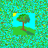 |
-blur" to generate rough mottled average image color in the
resulting edge effects it produces.
Note that the pixel value is not consistant, and will produce a different
effect for each lookup, and even each run of the operation, unless the random
number generator is given an initial "-seed".
This is especially bad when used with Convolution
or Morphology image processing, as the each
lookup along the edge of the image will contribute a different value even
though the same pixel lookup was used.
I have however found the random pattern to be very good when generating a Perspective Horizion as the pattern shows
a more blurred result as you get closer to the horizon. The bluring gives the
the resulting random texture a depth that would otherwise not be visible if
using a simple solid color.
'
dither' however returns an ordered dithered pattern of
colors basied on pixels within 32x32 pixels of the requested position.
That means that once you have progressed beyond 32 pixels from the image, the
result will be again just the corner pixel color of the image. It is a bit
like a merger of 'edge' and 'random'.
|
![[IM Output]](virtual_dither.gif)
|
random' VP close into the image, but becomes more
like 'edge' like in effect once you process
further than 32 pixels from the image proper.
Virtual Pixel and Infinities
You can see the effects of "-virtual-pixel" much more clearly in the results the General Distortion Operator, and
especially with a Perspective
distortion, allowing you to create a distorted view out toward an infinite
distance.
For example here I show the results of a "-virtual-pixel dither"
settings, on a perspective view of the tree. This shows how this setting can
effect the pixels returned all the way out to infinity.
magick tree.gif -alpha setcolor DodgerBlue -virtual-pixel dither \
-set option:distort:viewport 150x100-50-50 \
-distort perspective '0,0 9,0 31,0 38,0 0,31 0,18 31,31, 40,18' \
perspective_dither.gif
|
-virtual-pixel" settings to get a better idea of how they work.
Some other examples can also be seen in Viewing Distant Horizons.
Note that the 'sky' in the above view is actually generated from the "-alpha setcolor" setting, which
is used by distort to prepresent areas that are 'Invalid', in this case the
'sky' of a perspective distortion. It did not come from the "-virtual-pixel" setting.
Virtual Pixel Colors
None of the "-virtual-pixel" methods actually return a different or composite
color to what is already present within the image, unless that color was
specifically requested via one of the solid color methods: 'background', 'transparent', 'background', 'black', 'white', 'gray';
That is no new colors are ever generated, though one specific color could be
added (two for the General Distortion
Operator).
Of course if the requested pixels are being Pixel
Interpolated, or Area
Resampled, such as in the perspective distorted view above, then those
methods may merge the colors returned according ot the "-virtual-pixel" setting
chosen.
Virtual Pixel Effects on Operators
Here I explore the effects of the effects of "-virtual-pixel" setting with
various operators.
"-blur"...
| 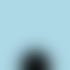 |
|
![[IM Output]](vp_blur_2.png)
|
-blur" with the "-virtual-pixel" setting of
'tile'. Of course if the image was tilable to start with this
may be desired.
|
![[IM Output]](vp_blur_3.png)
|
-virtual-pixel" in the image
has some very interesting effects and posibilities.
|
![[IM Output]](vp_blur_4.png)
|
| 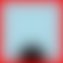 |
red' background I placed behind the image is
visible around the edges where the resulting blurred image has made use of
the virtual pixels that surround the real pixels of the image.
"-gaussian" has the
same basic results as "-blur", which is understandable as they are mathematically
identical.
|
![[IM Output]](vp_gaussian.png)
|
-radial-blur" (really a rotational blur), produces more
interesting border effects...
|
![[IM Output]](vp_radial.png)
|
-motion-blur" can be very badly effected by edge effects.
It is made worse by the fact that "-motion-blur" does not
current understand the use of "-channel" for limited its effects to specific channels.
|
|
|
| 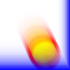 |
Implosion Effects of Virtual Pixels
Here are some more interesting examples of various large value (>1.0) implosions using various "-virtual-pixel" settings.
|
| Implode | Edge | Tile | Mirror | Dither | Random | Gray |
|---|---|---|---|---|---|---|
| 2 | ![[IM Output]](implode_edge_2.gif)
| 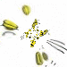 | 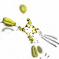 | 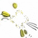 | 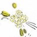 | ![[IM Output]](implode_gray_2.gif)
|
| 5 | ![[IM Output]](implode_edge_5.gif)
| ![[IM Output]](implode_tile_5.gif)
| ![[IM Output]](implode_mirror_5.gif)
| 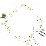 | 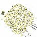 | ![[IM Output]](implode_gray_5.gif)
|
| 10 | 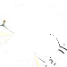 | ![[IM Output]](implode_tile_10.gif)
| 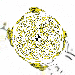 | 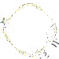 | 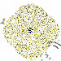 | ![[IM Output]](implode_gray_10.gif)
|
| 50 | ![[IM Output]](implode_edge_50.gif)
| ![[IM Output]](implode_tile_50.gif)
| ![[IM Output]](implode_mirror_50.gif)
| ![[IM Output]](implode_dither_50.gif)
| 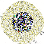 | |
| 500 | 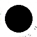 | ![[IM Output]](implode_tile_500.gif)
| ![[IM Output]](implode_dither_500.gif)
| 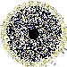 | ![[IM Output]](implode_gray_500.gif)
|
-implode" operator. See Direct Interpolated Lookup. This may change in a future version of IM,
using Area Resampling. For now you
will need to use a Super Sampling
technique to improve results.
The 'edge' setting is the more usual and default setting that is
use, to avoid most of the weird effects. The others (exept for
'background' essentually produce a replicated pattern from the
existing pixels in the image, and effects are highly variable.
Also note how the argument requires an expotential increase in size for simular
increases in effects.
Also for arguments larger than about 200 a black circle may appear in the
center of the resulting image. This is caused by the computers mathematical
limit being reached. Using such large values is an effect we do not
recommend you use.
Random Spots of Solid Color
By blurring a "plasma:fractal" canvas, then reducing the colors
to very low values you can produce simple images containing random areas of
different colors. However the results are highly variable depending on the
final number of colors requested and the Virtual
Pixel setting (see above).
I had two choices for the initial random image in this experiment. A Fractal Plasma Image, and a Random Noise Image.
The Random Image will by its nature produce a
image which can (with a 'tile "-virtual-pixel" setting) create a better tilable image. Where as
the Plasma Image tends to create
rectangular like edges to its spots of color.
On the other hand the Plasma Image
produces fairly nice pastel colored spots, or blobs. While the Random Image tends to produce horrible shades of
mid-tone gray. because of this I chose to use the Plasma Image for these experiments.
|
| Num Colors | Edge | Mirror | Tile | White | Black |
|---|---|---|---|---|---|
| 2 | ![[IM Output]](spot2_edge.gif) |
![[IM Output]](spot2_mirror.gif) |
![[IM Output]](spot2_tile.gif) |
||
| 3 | ![[IM Output]](spot3_edge.gif) |
||||
| 4 | ![[IM Output]](spot4_edge.gif) |
![[IM Output]](spot4_tile.gif) |
![[IM Output]](spot4_white.gif) |
||
| 5 | ![[IM Output]](spot5_mirror.gif) |
![[IM Output]](spot5_white.gif) |
Edge' and
'Mirror' tends to cause the colors to join the edges at 90 degree
angles.
A 'Random' or 'Dither' setting has simular but
stronger attachments of the color blobs to the edges of the image, though both
also introduces some sharp edge effects close to the image edges. A second
blur-quantize cycle may be needed to clean up and smooth the edges of the
spots.
The 'Tile' setting tends to allow the spots to wrap around the
image. However as the source Plasma
image is not itself tilable, the result is a general color change near the
rectangular edge. If the tilable Random image
was used as the source, then the spots of colors would completely disregard
the borders of the image.
By using a 'White' or 'Black' background
virtual-pixel setting, the spots of color tend to be centered in the image
proper. How well this 'centering' occurs depends on just how different
original random image was relative to the 'background color' used.
The size of the "-blur"
basically effects the size and smoothness of the blobs. A small blur producing
lots of small spots, a large blur, such as we used in the above, producing a
single more circular spot of color.
You can also produce a completely different set of colors and interactions by using a different color quantization color space. For example here I repeat the last example (reducing to 5 colors) from above but use some more unusal "
-quantize" color
spaces for color selection. (See Color
Quantization and ColorSpace)
Remember all the above images were all generated from the same randomized
source image. The different effects you see are the results of different ways
reducing the number of colors in the image.
You can see how the "![[IM Output]](spot_RGB_edge.gif)
![[IM Output]](spot_RGB_mirror.gif)
![[IM Output]](spot_RGB_tile.gif)
![[IM Output]](spot_RGB_black.gif)
![[IM Output]](spot_YIQ_edge.gif)
![[IM Output]](spot_YIQ_tile.gif)
![[IM Output]](spot_YIQ_white.gif)
![[IM Output]](spot_HSL_edge.gif)
![[IM Output]](spot_HSL_black.gif)
![[IM Output]](spot_XYZ_mirror.gif)
![[IM Output]](spot_XYZ_black.gif)
![[IM Output]](spot_OHTA_edge.gif)
![[IM Output]](spot_OHTA_tile.gif)
![[IM Output]](spot_OHTA_white.gif)
{kind=link}
{kind=link}
{kind=link}
{kind=link}
{kind=link}
{kind=link}
{kind=link}
{kind=link}
{kind=link}
{kind=link}
{kind=link}
{kind=link}
{kind=link}
{kind=link}
{kind=link}
{kind=link}
{kind=link}
{kind=link}
{kind=link}
{kind=link}
{kind=link}
{kind=link}
{kind=link}
{kind=link}
{kind=link}
{kind=link}
{kind=link}
{kind=link}
{kind=link}
{kind=link}
{kind=link}
{kind=link}
{kind=link}
{kind=link}
{kind=link}
{kind=link}
{kind=link}
{kind=link}
{kind=link}
{kind=link}
{kind=link}
{kind=link}
{kind=link}
{kind=link}
{kind=link}
{kind=link}
{kind=link}
{kind=link}
{kind=link}
{kind=link}
{kind=link}
{kind=link}
{kind=link}
{kind=link}
{kind=link}
{kind=link}
{kind=link}
{kind=link}
{kind=link}
{kind=link}
{kind=link}
-virtual-pixel" setting defining what pixel colors blur sees the
areas beyond the image bounds has a strong influence on shapes of the color
areas.
Annotate Argument Usage
IM Version 6 provided a new command line option for text drawing "-annotate" which bypasses the
older "-draw" method to
use the Annotate() API directly. This provides some new features
to command line users.
For this example I choose Arial Black font, for its straight lettering
so that the rotation should be quite clear.
|
![[IM Output]](annotate_source.jpg)
|
-annotate {SlewX}x{SlewY}+{X}+{Y} 'Text String'
The X and Y offset of the above is the gravity effected position
of the annotated text that is to be drawn.
However the SlewX and SlewY represents a form of rotation. If
both of these values are the same then a normal rotation is performed. But if
they differ, some very interesting effects can result..
![[IM Output]](annotate_montage.jpg)
|
Splice: Creating a New Image Operator
Just after the first release of ImageMagick version 6, a discussion developed in response to a question. The question involved adding extra space (rows and columns) into the middle of an image. The example below is the complex set of commands that resulted from this discussion, using the heavy magic of IM version 6, and detailed exactly what should be done. From this example the "-splice" operator was created (for details see examples in Splicing and Chopping Rows and Columns into
Images). As such this command line is the defining operations of this new
command, and both should work in exactly the same way.
|
![[IM Output]](splice_rose_seq.gif)
|
Border, Frame, and the use of BorderColor
There is a debate, that "-bordercolor" should only be used to only add a border to images
with the "-border" or
"-frame". That is many
users think it should not be used to set the background behind images
with transparency.
For example, under IM this sets the transparent areas of the star image to the
"-bordercolor" and
completely ignores the "-background" color setting.
|
![[IM Output]](star_border.gif)
|
The main reason "-bordercolor" is used to set the background of transparenent
images is because this makes "montage" come out in a nice way
when given a random set of images which could contain transparencies, with
minimal settings from the user.
|
{kind=link}
montage" results
above would not look nearly as good.
That does not mean that you can't preserve the transparency of images when
using "-border" or
"-frame" operators. It
just means you need to supply an extra "-compose" setting to tell IM to
preserve the transparency.
|
![[IM Output]](star_border_copy.gif)
![[IM Output]](star_montage_copy.gif)
|
-border" or
"-frame", see adding borders. and for "montage",
see montage background and transparency handling
examples.
One alturnative that has been suggested was to set image area background in
these operators to the "-background" color, but this will interfer with its use in
"montage".
You can of course always Remove the
Transparency of the image yourself, before any extra frame or border is
added. In that case the use of "-compose Copy" becomes
irrelevent.
|
![[IM Output]](star_montage_texture.gif)
|
-compose" setting, to preserve the transparency, rather that have
border preserve it and cause other problems. It may not be obvious to new
users, but then that is what these example pages are all about.
List Operator Testing
All the following commands should produce exactly the same image, but all images are produced in slightly different ways, demonstrating the new, IM version 6, Image List Operators.
|
![[IM Output]](list_test_01.gif)
| |
|
![[IM Output]](list_test_02.gif)
| |
|
![[IM Output]](list_test_03.gif)
| |
|
![[IM Output]](list_test_04.gif)
| |
|
![[IM Output]](list_test_05.gif)
| |
|
![[IM Output]](list_test_06.gif)
| |
|
![[IM Output]](list_test_07.gif)
| |
|
![[IM Output]](list_test_08.gif)
| |
|
![[IM Output]](list_test_09.gif)
| |
|
![[IM Output]](list_test_10.gif)
| |
|
![[IM Output]](list_test_11.gif)
| |
|
![[IM Output]](list_test_12.gif)
| |
|
![[IM Output]](list_test_13.gif)
| |
|
![[IM Output]](list_test_14.gif)
| |
|
![[IM Output]](list_test_15.gif)
| |
|
![[IM Output]](list_test_16.gif)
| |
|
![[IM Output]](list_test_17.gif)
| |
|
![[IM Output]](list_test_18.gif)
| |
|
![[IM Output]](list_test_19.gif)
| |
|
![[IM Output]](list_test_20.gif)
| |
|
![[IM Output]](list_test_21.gif)
| |
|
![[IM Output]](list_test_22.gif)
| |
|
![[IM Output]](list_test_23.gif)
| |
|
![[IM Output]](list_test_24.gif)
| |
|
![[IM Output]](list_test_25.gif)
| |
|
![[IM Output]](list_test_26.gif)
| |
|
![[IM Output]](list_test_27.gif)
|